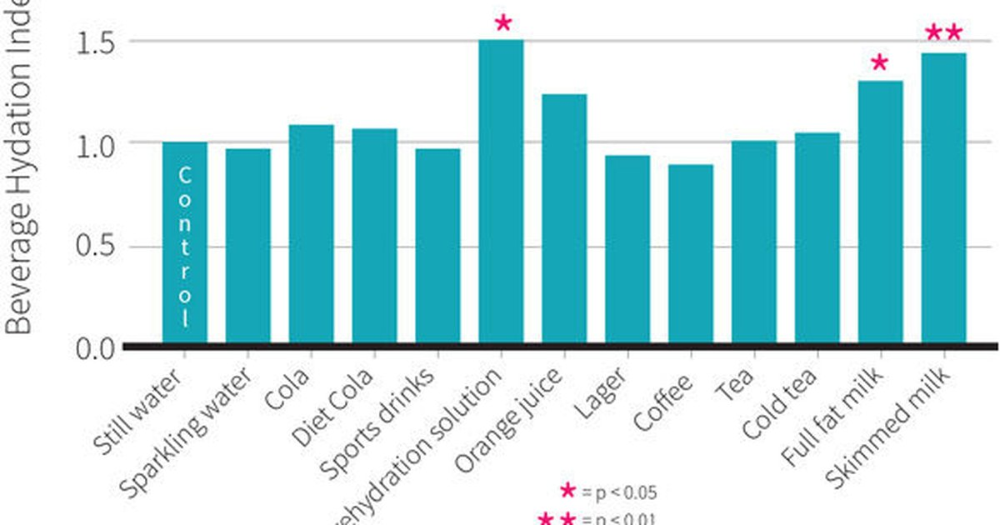

I still remember the first time I read Ron Maughan’s Beverage Hydration Index paper. It was 2016, I was studying for my sports nutrition exam, and the results made no sense to me. Milk is more hydrating than water? Coffee isn’t dehydrating? Beer is worse than soda? I thought the researchers had made a mistake. So I read the methods section three times. They gave 72 men one liter of different beverages. Then they collected all their urine for the next four hours. They measured how much fluid the body retained. Plain water was the baseline at 1.0. Anything that kept more fluid in the body scored above 1.0. Anything that caused more fluid loss scored below. Milk scored 1.5. That’s 50% more hydrating than water. The reason is gastric emptying. Milk contains protein, fat, and lactose. Those nutrients slow down how fast the liquid leaves your stomach. The fluid stays in your system longer, so you retain more. Same reason oral rehydration solutions like Pedialyte score around 1.1 — they have sodium and glucose, which also slow gastric emptying. Coffee and tea scored 0.98. Almost the same as water. The caffeine is a mild diuretic, but not strong enough to offset the volume of water. For a regular coffee drinker, the diuretic effect is even smaller because your body adapts. So no, your morning coffee isn’t dehydrating you. It’s just not quite as good as water. Beer scored 0.79. That’s a significant drop. Alcohol inhibits the release of vasopressin, the hormone that tells your kidneys to hold onto water. So you pee more. A standard beer gives you about 79% of its volume as net fluid. The other 21% gets flushed out. Wine is worse, around 0.7. Spirits with water or soda are somewhere in between, depending on the alcohol percentage. Juice and soda scored around 0.9. The sugar in these drinks delays gastric emptying a bit, but not as much as protein or fat. Plus, some sodas have caffeine, which adds a mild diuretic effect. So they’re less hydrating than water, but not terrible. What surprised me most was that sports drinks scored around 0.95 to 1.0. That’s not much better than water. The sodium in sports drinks helps with fluid retention, but many commercial sports drinks don’t have enough sodium to make a big difference. The ones that do — like those designed for endurance athletes — might score higher. But the average Gatorade or Powerade? About the same as water. So why does any of this matter? Because most people think of hydration as “drink water or else.” But the BHI shows you have options. If you hate water, you can hydrate with milk, coffee, tea, even juice in moderation. If you’re an athlete doing back‑to‑back workouts, milk might be better than a sports drink for rehydration. If you’re trying to lose weight, water is still best because it’s calorie‑free. But if you need to hydrate a picky toddler who won’t drink water, milk or watermelon or even diluted juice will work. I started using BHI with my clients in a practical way. Not as a strict rule, but as a ranking system. Imagine you have three people. Person A drinks only water. Person B drinks coffee and water. Person C drinks soda and water. Person A and Person B will have similar hydration status if their total fluid volume is the same. Person C will be slightly less hydrated because soda has a lower BHI and often displaces water. The ranking looks like this from most hydrating to least: Milk (1.5). Oral rehydration solutions (1.1). Water (1.0). Coffee/tea (0.98). Sports drinks (0.95‑1.0). Juice (0.9). Soda (0.89). Beer (0.79). Wine (0.7). Now let me tell you about a client who transformed his hydration using BHI. He was a construction foreman named Tony. He hated water. Said it had “no taste and no purpose.” He drank about eight cans of Diet Coke per day. That’s 2.8 liters (95 ounces) of fluid. Sounds like plenty, right? But Diet Coke has a BHI of about 0.89. His net fluid from those eight cans was only 2.5 liters (85 ounces). That’s actually below the recommended 3 liters for a manual worker in a hot climate. Plus, the caffeine was disrupting his sleep and the artificial sweeteners were messing with his gut. We didn’t take away his Diet Coke. We just added other beverages. One glass of milk with breakfast — BHI 1.5. One 500 mL bottle of water with lemon at lunch — BHI 1.0. One 500 mL electrolyte drink after work — BHI about 1.1. He still had his Diet Coke, but now his total net fluid was much higher. His headaches went away. His energy improved. He said his joints felt less stiff. The BHI also explains why some people feel better when they switch from soda to sparkling water. Sparkling water has a BHI of 1.0 — same as still water. Soda is 0.89. That 11% difference adds up over time. For Tony, replacing just two of his eight Diet Cokes with sparkling water increased his net fluid by about 200 mL (7 ounces) per day. That’s not nothing. Another client, a runner named Priya, was drinking sports drinks during her long runs but feeling bloated. We checked the label. Her sports drink had only 150 mg of sodium per liter. That’s not enough to slow gastric emptying or improve fluid retention. She was basically drinking slightly flavored water. We switched her to a higher‑sodium sports drink (500 mg per liter) and her bloating disappeared. The higher sodium increased the BHI and kept the fluid in her system longer. The BHI isn’t perfect. The original study measured fluid retention over only four hours. It didn’t look at long‑term effects. It didn’t account for individual differences in caffeine tolerance or kidney function. But it’s the best tool we have for comparing beverages. Here’s how I use BHI in real life. For everyday hydration, I tell people to drink mostly water or sparkling water. That’s the baseline. If they want coffee or tea, that’s fine — it counts almost the same as water. If they want milk, that’s great for hydration but watch the calories. If they want juice or soda, treat those as treats, not hydration. For athletes, milk or a high‑sodium sports drink can be better than water for recovery. One thing BHI doesn’t measure is electrolyte content. Milk is hydrating but also has calcium, potassium, and sodium. Coconut water has a BHI around 1.0 but contains potassium and magnesium. That can be useful for people who sweat a lot. So BHI isn’t the only metric. It’s one tool in the toolbox. I also want to bust a myth. Some people say, “I only drink coffee and I feel fine.” That’s possible if you’re getting enough total fluid volume. If you drink 3 liters of coffee per day, your net fluid is about 2.94 liters — almost the same as water. The problem isn’t the coffee. It’s that most coffee drinkers don’t drink that much coffee. They drink two cups, then nothing else. Two cups of coffee is 475 mL, net about 465 mL. That’s not enough for anyone. The BHI tells you that coffee counts, but you still need enough volume. The tool I built for this lets you enter any beverage and see its BHI and net fluid contribution.Beverage Hydration Index Tool
Search 80+ beverages. Get BHI, net fluid per cup, electrolytes, and calories.
All data stays in your browser — we never see it.
Hydration Goal Setter
Combine with the BHI tool to track net fluid, not just volume.
All data stays in your browser — we never see it.
Daily Water Intake Calculator
Find your individualized fluid goal before applying BHI adjustments.
All data stays in your browser — we never see it.